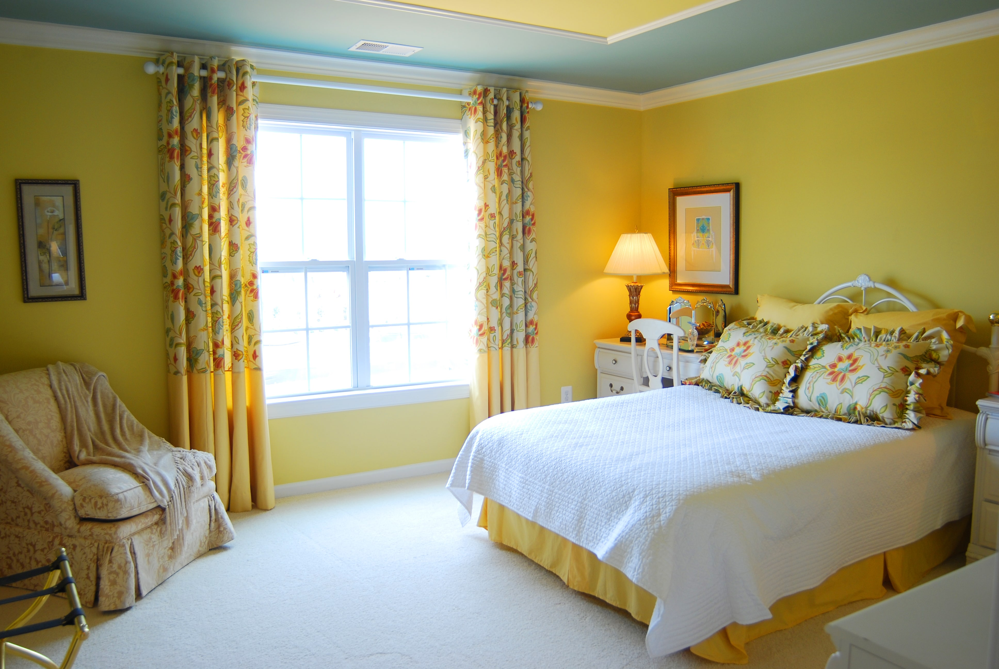
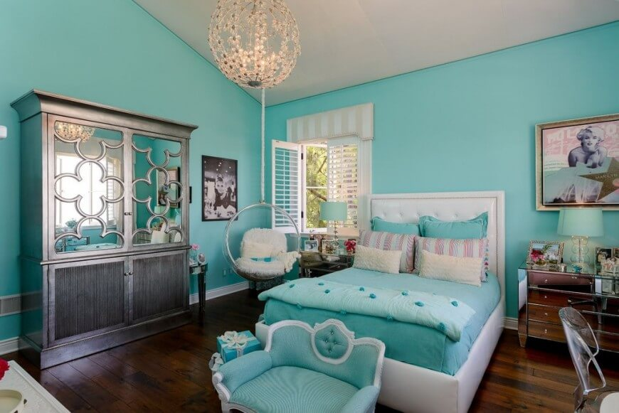
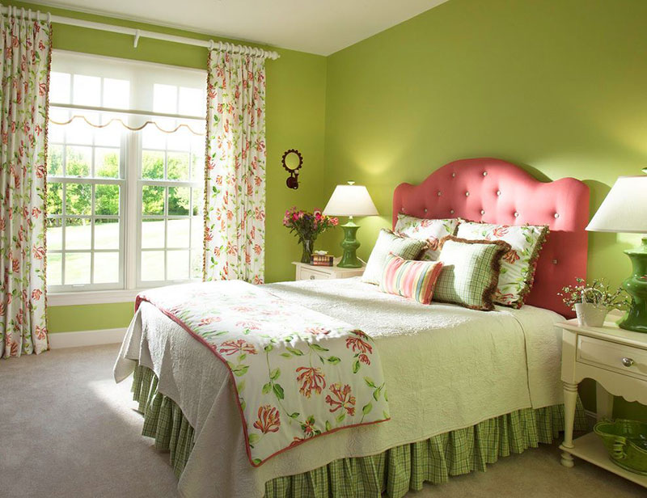
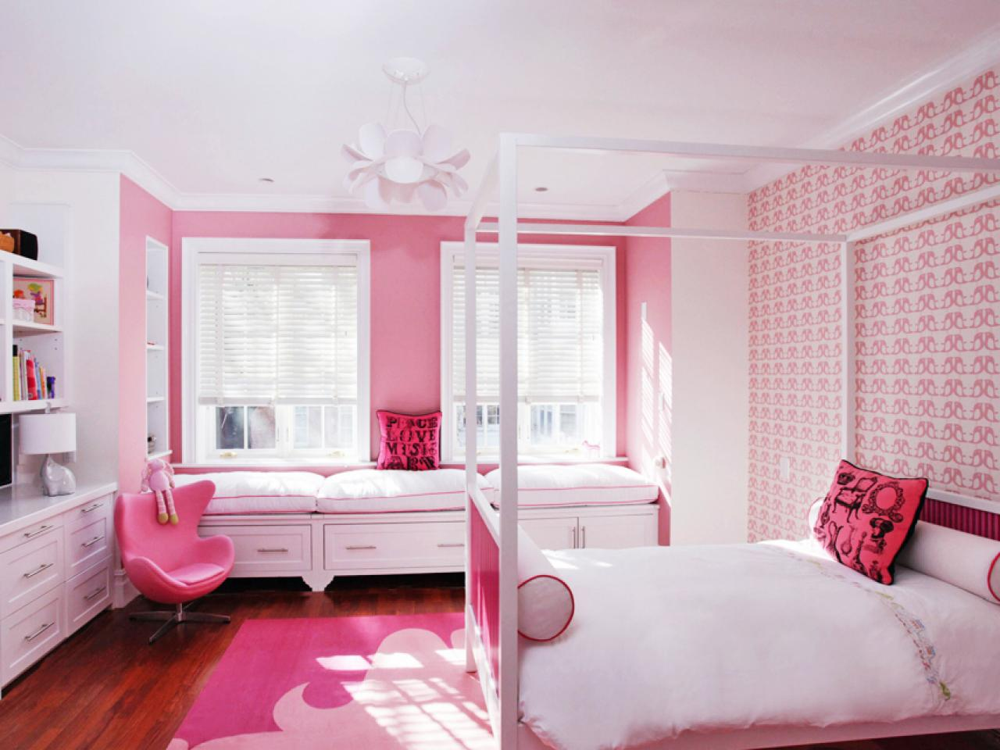
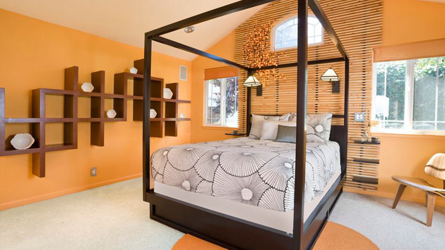
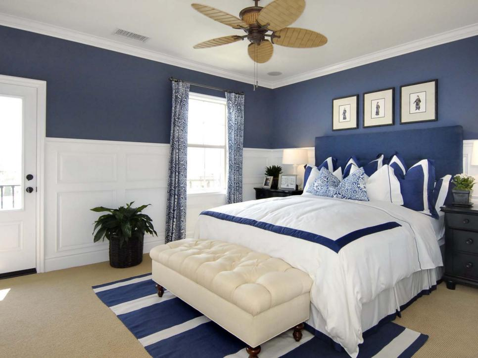
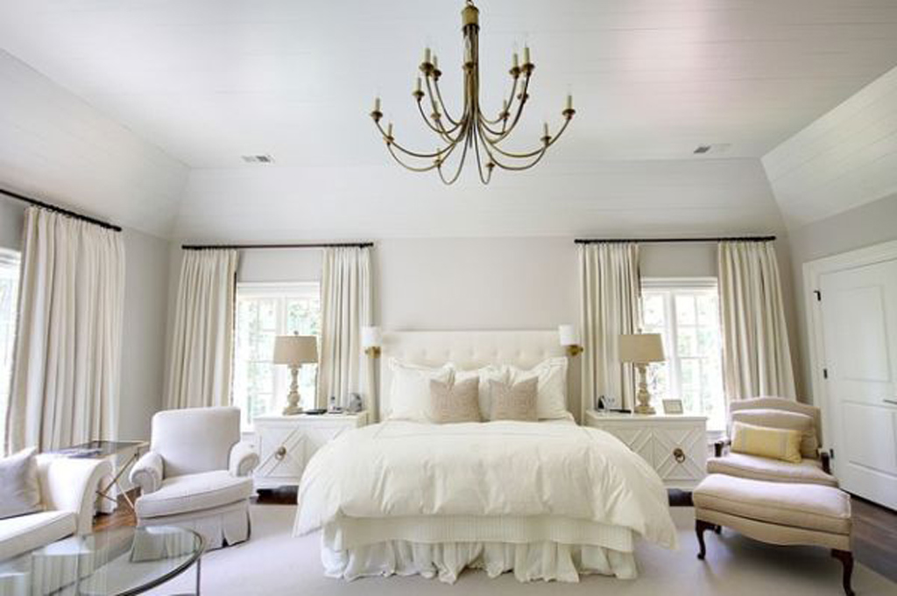
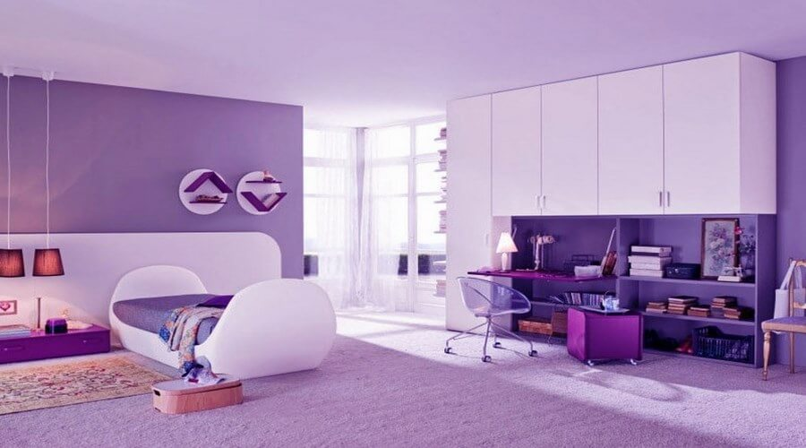

กดปุ่ม H เพื่อกลับสู่หน้าหลัก
สีกับการนอนหลับ...
สีทาห้องนอน แต่ละสีมีอิทธิพลต่อการพักผ่อน ช่วยให้หลับสนิท สร้างความสุขและความเบิกบานตั้งแต่ตื่นนอน ดังนั้นการที่เราเลือกที่จะตกแต่งห้องนอนด้วยสีสันต่างๆนอกจากทำให้สบายตาแล้ว หลับสนิท แล้วยังทำให้ทุกเช้าของคุณดูสดใสขึ้นมาอีก แล้วสีไหนกันหล่ะ!!!...ที่เหมาะกับคุณ
สีเหลือง

แม้สีโทนสว่าง ๆ อย่างสีเหลืองจะดูเป็นสีที่ทำให้รู้สึกตื่นตัวอยู่ตลอดเวลา และดูไม่เหมาะสมกับการนำมาตกแต่งห้องนอน แต่มันก็สามารถสร้างความสุขให้กับเราได้ตั้งแต่ลืมตาตื่นนอนเลยเชื่อไหม อีกทั้งยังกระตุ้นความแอ็คทีฟในตัว ทำให้รู้สึกสดชื่น เพิ่มความคล่องตัว และพร้อมที่จะออกไปเผชิญโลกอย่างมั่นใจได้อีกด้วย
สรุป...ห้องนอนสีเหลือง
| ตื่นตัว |
|
| แอ็คทีฟ |
|
| สดชื่น |
|
| คล่องตัว |
|
สีฟ้า

หากห้องนอนห้องเก่าดูไม่มีชีวิตชีวาอีกต่อไป ลองเปลี่ยนสีห้องนอนมาเป็นสีฟ้าน้ำทะเลหรือสีฟ้าเทอร์ควอยซ์ดูสิคะ แล้วคุณจะสัมผัสได้ถึงความแตกต่าง ความสนุกสนาน พร้อมทั้งปลุกความสดใสให้ตื่นนอนมาพร้อมกับคุณเลยทีเดียว แม้ในห้องนอนจะไม่มีการตกแต่งอะไรมากมาย แต่สีโทนนี้ก็ทำให้ห้องนอนของคุณดูสวยงามอย่างสมบูรณ์แบบ
สรุป...ห้องนอนสีฟ้า
| อบอุ่น |
|
| สดชื่น |
|
| สนุกสนาน |
|
สีเขียว

ไม่ว่าสีเขียวนั้นจะเป็นโทนไหนหรือเฉดอะไร มันก็คือสีที่สื่อถึงความเป็นธรรมชาติเสมอ โดยเฉพาะสีเขียวอ่อน หากเลือกนำมาแต่งห้องนอนก็จะทำให้ผู้อยู่อาศัยสัมผัสได้ถึงความผ่อนคลายสบายอารมณ์ เสมือนได้พักผ่อนในธรรมชาติ เมื่อดวงอาทิตย์กำลังลาลับขอบฟ้าแสงแดดอุ่น ๆ ที่ลอดเข้ามากระทบกับสีเขียวอ่อนภายในห้อง ก็จะทำให้รู้สึกเหมือนนอนอยู่ในสวนเลย
สรุป...ห้องนอนสีเขียว
| มีชีวิตชีวา |
|
| สบายตา |
|
| ผ่อนคลาย |
|
สีชมพู

เมื่อพูดถึงห้องนอนสีชมพูแล้วหลายคนคงจะกลัวความเลี่ยนจนไม่กล้านำมาใช้ แต่หารู้ไม่ว่าสีชมพูนี่แหละเปรียบเสมือนยาอายุวัฒนะที่ทำให้รู้สึกสดชื่นและสดใสเมื่อยามตื่นนอน กระตุ้นพลังในร่างกายสำหรับเช้าวันใหม่ คล้ายกับเด็กหนุ่ม-สาวที่ยังมีไฟอยู่เสมอ หากใครไม่มั่นใจกับการแต่งห้องด้วยสีชมพู ก็แค่ลองปรับเปลี่ยนวิธีโดยการแต่งมุมใดมุมหนึ่งด้วยสีชมพูหรือเลือกใช้เฟอร์นิเจอร์ที่มีสีชมพูแทนก็ได้
สรุป...ห้องนอนสีชมพู
| โรแมนติก |
|
| สดใส |
|
| สบายตา |
|
| ผ่อนคลาย |
|
สีส้ม

สีส้มเป็นส่วนผสมระหว่างสีแดงและสีเหลือง ดังนั้นหากนำสีส้มมาตกแต่งในห้องนอนก็จะช่วยกระตุ้นพลังงานในตัวและยังทำให้รู้สึกสดชื่น สีส้มสื่อถึงการมองโลกในแง่ดีช่วยให้การตื่นนอนตอนเช้าในแต่ละวันนั้นมีแต่ความสุขอีกด้วย
สรุป...ห้องนอนสีส้ม
| แอ็คทีฟ |
|
| สดใส |
|
| ตื่นตัว |
|
| ดึงดูด |
|
สีกรมท่าหรือสีน้ำเงิน

ความเข้มข้นของสีกรมท่านั้นสื่อถึงความซื่อสัตย์ ความรับผิดชอบ และความยุติธรรม ดังนั้นการตกแต่งห้องนอนด้วยสีกรมท่าก็จะทำให้การตื่นนอนของผู้อยู่อาศัยนั้นมีความหมาย เตรียมความพร้อมให้ออกไปเจอสิ่งต่าง ๆ และจัดการกับมันได้อย่างดีเยี่ยม ไม่ถอยหนีแม้มีอุปสรรคมากมาย อีกทั้งยังช่วยเพิ่มเติมความคิดสร้างสรรค์และสีสันในชีวิตได้อีกด้วย
สรุป...ห้องนอนสีกรมท่าหรือสีน้ำเงิน
| แข็งแกร่ง |
|
| อบอุ่น |
|
| ไอเดียบรรเจิด |
|
สีขาว

สีขาวไม่ได้มีดีแค่ช่วยเพิ่มขนาดของห้องเพียงอย่างเดียว เพราะถ้าหากเรานำมาตกแต่งห้องนอนก็ช่วยปรับบรรยากาศในห้องให้ดูผ่อนคลาย เมื่อแสงส่องลอดเข้ามาภายในห้องนอนก็จะสะท้อนความสว่าง ทำให้การตื่นนอนของเรามีความสุขมากยิ่งขึ้นกว่าทุกวันด้วย
สรุป...ห้องนอนสีขาว
| ห้องดูกว้าง |
|
| สะอาดตา |
|
| เป็นที่นิยม |
|
สีม่วง

สีม่วงถือว่าเป็นสีที่มีความเป็นตัวของตัวเองสูง เหมาะกับคนที่ช่างคิดช่างสร้างสรรค์ ถ้าหากนำมาตกแต่งห้องนอน ก็จะช่วยกระตุ้นพลังความคิดและจิตวิญญาณภายในตัว สร้างแรงบันดาลใจให้การตื่นนอนของคุณมีความหมาย พร้อมออกไปสร้างสรรค์สิ่งใหม่ ๆ เสมอ
สรุป...ห้องนอนสีม่วง
| ทันสมัย |
|
| ตื่นตัว |
|
| ไอเดียบรรเจิด |
|
สีที่ใช่ยังไงก็ชอบ...
ใครที่ชอบสีอะไร โทนไหนจองไว้เลย ได้ห้องนอนสีในดวงใจแล้ว ก็อย่าลืมทำความสะอาดห้องนอนอยู่เสมอนะคะ การพักผ่อน คือ การดูแลรักษาร่างกายของของตัวเราเองที่ที่สุดเลยนะคะ สำหรับไอเดียสีแต่งห้องนอนที่เรานำมาฝากกันในวันนี้ไปตกแต่งกันเลย
Ref : https://www.kapook.com